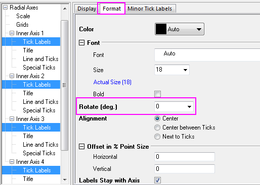

Polardiagramm mit benutzerdefinierten Radialachsen
polar-custom-radial
Zusammenfassung
Mit dem Dialog für die Polarachsen können Sie sowohl Winkel- als auch für Radialachsen flexibel benutzerdefiniert anpassen.

Origin-Version mind. erforderlich: 2015 SR0
Was Sie lernen werden
Dieses Tutorial zeigt Ihnen, wie Sie:
- ein Polardiagramm erstellen.
- Winkelachsen ausblenden.
- Radialachse benutzerdefiniert anpassen.
Schritte
Dieses Tutorial basiert auf dem Projekt: <Origin-Verzeichnis>\Samples\Tutorial Data.opj.
Polardiagramm ohne Winkelachsen erstellen
- Öffnen Sie die Datei Tutorial Data.opj, navigieren Sie zu dem Ordner Custom Radial Axis und aktivieren Sie die Arbeitsmappe Book1E.
- Markieren Sie Spalte B und wählen Sie Zeichnen: Spezialisiert: Polar Theta(X) r(Y), um ein Polardiagramm zu erzeugen.
- Markieren Sie die Legende und löschen Sie sie.
- Um die äußere Achse (den äußeren Kreis) des Polardiagramms auszublenden, klicken Sie doppelt auf eine Achse, um den Dialog Achsen zu öffnen. Gehen Sie zur Registerkarte Zeigen, wählen Sie Winkel - Äußere im linken Bedienfeld und deaktivieren Sie das Kontrollkästchen Zeigen.
- Um alle Gitternetzlinien der Winkel zu verbergen, gehen Sie zur Registerkarte Gitternetze und stellen Sie sicher, dass Winkel im linken Bedienfeld ausgewählt ist. Deaktivieren Sie die Kontrollkästchen Zeigen in den Abschnitten Hauptgitternetzlinien und Nebengitternetzlinien.
- Gehen Sie zur Registerkarte Skalierung und wählen Sie Radial im linken Bedienfeld. Legen Sie die Achsenskalierung, wie unten gezeigt, fest:
- Wechseln Sie dann zur Registerkarte Gitternetze und legen Sie folgende Optionen fest:
Radialachsen auf jedem großen Hilfsstrich hinzufügen
- Um Radialachsen auf jeder Position eines großen Hilfsstrichs der Winkelachse anzuzeigen, wechseln Sie zum Zweig Konfiguration der Radialachsen. Aktivieren Sie im Dialog die Option Große Hilfsstriche im Abschnitt Achsen innerhalb Polar.
- Um die Achsentitel zu verbergen, gehen Sie zur Registerkarte Titel und wählen Sie Radial - Hauptachsen im linken Bedienfeld. Deaktivieren Sie das Kontrollkästchen Zeigen. Klicken Sie auf die Schaltfläche Anwenden.

- In der Mitte des Polardiagramms werden vier 0 gezeigt. Um sie auszublenden, gehen Sie zur Registerkarte Spezielle Hilfsstriche. Wählen Sie Verstecken in der Auswahlliste Achsenanfang.

Klicken Sie auf OK, um den Dialog zu schließen.
Wenn Sie zur Registerkarte Skalierung der Radialachsen gehen und die großen Hilfsstriche ändern, wenn die Einstellung vorsieht, dass die Radialachsen auf jedem großen Hilfsstrich gezeigt werden, werden die Radialachsen auf den neuen Positionen der großen Hilfsstriche gezeigt.
Dialog Konfiguration zum benutzerdefinierten Anpassen der Radialachsen verwenden
Origin unterstützt zwei Arten von Radialachsen. Eine Achse betrifft den Rahmen um das Polardiagramm herum. Bei der anderen Achse handelt es sich um die innere Achse von der Mitte des Polardiagramms nach außen gehend.
- Fahren Sie mit dem Diagramm aus dem vorherigen Abschnitt fort. Klicken Sie auf die Schaltfläche Konfiguration der Radialachsen oben im linken Bedienfeld. Legen Sie im Dialog Konfiguration der Radialachsen im Zweig Achsen innerhalb Polar die Winkelliste, wie unten gezeigt, fest und klicken Sie auf OK, um den Dialog zu schließen.
- Klicken Sie auf die Schaltfläche Anwenden. Es werden vier innere Radialachsen im linken Bedienfeld gezeigt.
- Gehen Sie zur Registerkarte Titel und wählen Sie Radial - Innere Achse 1 im linken Bedienfeld. Aktivieren Sie dann das Kontrollkästchen Gleiche Optionen für alle Radialachsen verwenden und deaktivieren Sie das Kontrollkästchen Zeigen, um alle Titel zu verbergen. Diese Einstellung wird dann auf vier Radialachsen angewendet.
- Gehen Sie zum Zweig Beschriftungen für Hilfsstriche und aktivieren Sie Gleiche Optionen für alle Radialachsen verwenden. Legen Sie auf der Unterregisterkarte Format die Option Drehen (Grad) mit 0 fest.
- 
- Gehen Sie zur Registerkarte Spezielle Hilfsstriche und aktivieren Sie das Kontrollkästchen Gleiche Optionen für alle Radialachsen verwenden. Setzen Sie Achsenanfang auf Verstecken.
- Gehen Sie zur Registerkarte Zeigen, drücken Sie Shift, um zwei Achsen Radial - Innere Achse 3 und Radial - Innere Achse 4 auszuwählen, ändern Sie die Fließrichtung auf Negativ im Abschnitt Achsenposition.
- Gehen Sie zur Seite Beschriftung der Hilfsstriche und geben Sie ein Minuszeichen (-) im Bearbeitungsfeld Präfix auf der Unterregisterkarte Anzeige ein.
- Klicken Sie auf OK.

Weitere benutzerdefinierte Anpassung
- Um die Farbe des Liniendiagramms rot und etwas dicker zu machen, markieren Sie das Liniendiagramm und wählen Sie auf der Symbolleiste Stil die Linien-/Rahmenfarbe rot und setzen Sie die Linien-/Rahmenbreite auf 1,5.

- Um eine Gleichung zu diesem Diagramm als Diagrammtitel hinzuzufügen, klicken Sie mit der rechten Maustaste auf das Diagramm und wählen Sie Layertitel hinzufügen/modifizieren. Geben Sie dann r=exp(q*cot(79,5p/180)) in das Bearbeitungsfeld ein.
- Origin unterstützt RichText. Markieren Sie q im Text und klicken Sie auf die Schaltfläche
 auf der Symbolleiste Stil, um es in
auf der Symbolleiste Stil, um es in  zu ändern. Verändern Sie auch p in
zu ändern. Verändern Sie auch p in  . Der Text sieht dann folgendermaßen aus:
. Der Text sieht dann folgendermaßen aus:
- Um dem Text einen Schatten hinzuzufügen und die Schrift zu vergrößern, klicken Sie mit der rechten Maustaste auf den Titel und klicken Sie auf Einstellungen, um den Dialog Objekteigenschaften zu öffnen. Setzen Sie auf der Registerkarte Text die Schriftgröße auf 26, gehen Sie dann zur Registerkarte Rahmen und setzen Sie den Rahmen auf Schatten. Klicken Sie auf OK, um die Einstellung zu speichern.
- Verschieben Sie die Gleichung in die gewünschte Position. Das Diagramm sollte wie das Diagramm unter Zusammenfassung aussehen: